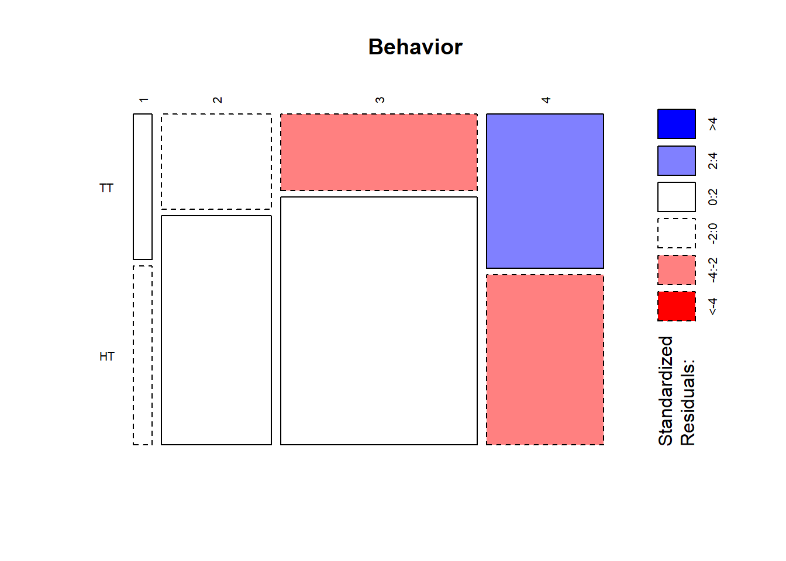
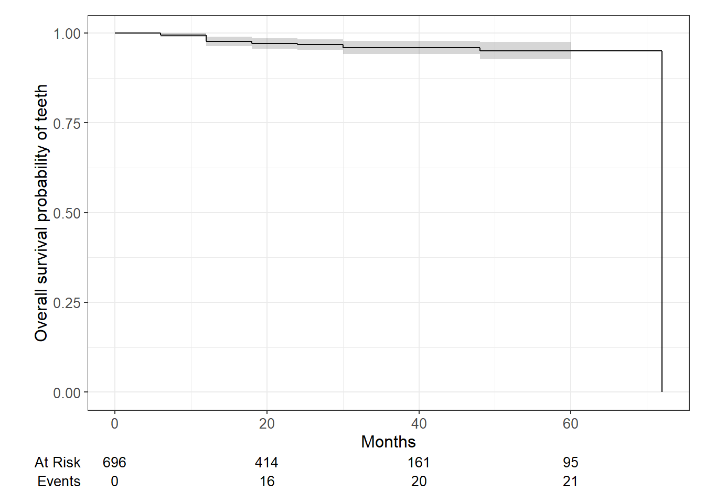

12/18/2023
2023-12-18
Last updated: 2024-01-31
Checks: 5 2
Knit directory: Collaborations/
This reproducible R Markdown analysis was created with workflowr (version 1.7.1). The Checks tab describes the reproducibility checks that were applied when the results were created. The Past versions tab lists the development history.
The R Markdown file has unstaged changes. To know which version of
the R Markdown file created these results, you’ll want to first commit
it to the Git repo. If you’re still working on the analysis, you can
ignore this warning. When you’re finished, you can run
wflow_publish to commit the R Markdown file and build the
HTML.
Great job! The global environment was empty. Objects defined in the global environment can affect the analysis in your R Markdown file in unknown ways. For reproduciblity it’s best to always run the code in an empty environment.
The command set.seed(20210523) was run prior to running
the code in the R Markdown file. Setting a seed ensures that any results
that rely on randomness, e.g. subsampling or permutations, are
reproducible.
Great job! Recording the operating system, R version, and package versions is critical for reproducibility.
Nice! There were no cached chunks for this analysis, so you can be confident that you successfully produced the results during this run.
Using absolute paths to the files within your workflowr project makes it difficult for you and others to run your code on a different machine. Change the absolute path(s) below to the suggested relative path(s) to make your code more reproducible.
| absolute | relative |
|---|---|
| C:/Shengtong/Research/AllCollaboration/Collaborations/analysis/Rfunctions.R | analysis/Rfunctions.R |
Great! You are using Git for version control. Tracking code development and connecting the code version to the results is critical for reproducibility.
The results in this page were generated with repository version 5ecf24b. See the Past versions tab to see a history of the changes made to the R Markdown and HTML files.
Note that you need to be careful to ensure that all relevant files for
the analysis have been committed to Git prior to generating the results
(you can use wflow_publish or
wflow_git_commit). workflowr only checks the R Markdown
file, but you know if there are other scripts or data files that it
depends on. Below is the status of the Git repository when the results
were generated:
Ignored files:
Ignored: .Rhistory
Ignored: analysis/.Rhistory
Ignored: analysis/2022_Mar2_Marinho_cache/
Unstaged changes:
Modified: analysis/2023_12_03_Cem.Rmd
Note that any generated files, e.g. HTML, png, CSS, etc., are not included in this status report because it is ok for generated content to have uncommitted changes.
These are the previous versions of the repository in which changes were
made to the R Markdown (analysis/2023_12_03_Cem.Rmd) and
HTML (docs/2023_12_03_Cem.html) files. If you’ve configured
a remote Git repository (see ?wflow_git_remote), click on
the hyperlinks in the table below to view the files as they were in that
past version.
| File | Version | Author | Date | Message |
|---|---|---|---|---|
| Rmd | 5ecf24b | han | 2024-01-31 | 1/31/2024 |
| html | 5ecf24b | han | 2024-01-31 | 1/31/2024 |
| Rmd | a41fd9a | han | 2024-01-22 | 1/22/2024 |
| html | a41fd9a | han | 2024-01-22 | 1/22/2024 |
| Rmd | 920ac76 | han | 2024-01-19 | 1/19/2024 |
| html | 920ac76 | han | 2024-01-19 | 1/19/2024 |
| Rmd | e6a6b19 | han | 2024-01-19 | 1/19/2024 |
| html | e6a6b19 | han | 2024-01-19 | 1/19/2024 |
| Rmd | 2e21fe5 | han | 2024-01-19 | 1/19/2024 |
| html | 2e21fe5 | han | 2024-01-19 | 1/19/2024 |
| Rmd | b8dad46 | han | 2024-01-18 | 1/18/2024 |
| html | b8dad46 | han | 2024-01-18 | 1/18/2024 |
| Rmd | 4512f4b | han | 2024-01-18 | 1/18/2024 |
| html | 4512f4b | han | 2024-01-18 | 1/18/2024 |
| Rmd | 9bfbb78 | han | 2024-01-17 | 1/17/2024 |
| html | 9bfbb78 | han | 2024-01-17 | 1/17/2024 |
| Rmd | a1be4ea | han | 2024-01-17 | 1/17/2024 |
| html | a1be4ea | han | 2024-01-17 | 1/17/2024 |
| Rmd | 45e2f97 | han | 2024-01-17 | 1/17/2024 |
| html | 45e2f97 | han | 2024-01-17 | 1/17/2024 |
| Rmd | a127fd6 | han | 2024-01-17 | 1/17/2024 |
| html | a127fd6 | han | 2024-01-17 | 1/17/2024 |
| Rmd | 382e4de | han | 2024-01-16 | 1/16/2024 |
| html | 382e4de | han | 2024-01-16 | 1/16/2024 |
| Rmd | 68deee2 | han | 2024-01-09 | 1/9/2024 |
| html | 68deee2 | han | 2024-01-09 | 1/9/2024 |
| Rmd | da75c75 | han | 2024-01-09 | 1/9/2024 |
| html | da75c75 | han | 2024-01-09 | 1/9/2024 |
| Rmd | 37e8ff5 | han | 2024-01-08 | 1/8/2024 |
| html | 37e8ff5 | han | 2024-01-08 | 1/8/2024 |
| Rmd | 9c63f4b | han | 2024-01-08 | 1/8/2024 |
| html | 9c63f4b | han | 2024-01-08 | 1/8/2024 |
| Rmd | eea66e7 | han | 2024-01-08 | 1/8/2024 |
| html | eea66e7 | han | 2024-01-08 | 1/8/2024 |
| Rmd | 9bdae92 | han | 2024-01-05 | 1/5/2024 |
| html | 9bdae92 | han | 2024-01-05 | 1/5/2024 |
| Rmd | ad3ea51 | han | 2024-01-03 | 1/3/2024 |
| html | ad3ea51 | han | 2024-01-03 | 1/3/2024 |
| Rmd | e3f7270 | han | 2023-12-31 | 12/31/2023 |
| Rmd | 93b8872 | han | 2023-12-21 | 12/21/2023 |
| html | 93b8872 | han | 2023-12-21 | 12/21/2023 |
| Rmd | 3b216e4 | han | 2023-12-18 | 12/18/2023 |
| html | 3b216e4 | han | 2023-12-18 | 12/18/2023 |
basic numbers

only include HT and TT
numbers are for teeth, not patients and one patient may have multiple teeth
teeth age between TT and HT
TT_age=data_ssc_survival %>% filter(`SSC Placement Technique`==1) %>% select(`Age on Tx Date`) %>% pull()
HT_age=data_ssc_survival %>% filter(`SSC Placement Technique`==2) %>% select(`Age on Tx Date`) %>% pull()
t.test(TT_age, HT_age)
Welch Two Sample t-test
data: TT_age and HT_age
t = 8.5615, df = 420.92, p-value < 2.2e-16
alternative hypothesis: true difference in means is not equal to 0
95 percent confidence interval:
8.941567 14.270855
sample estimates:
mean of x mean of y
84.07556 72.46934 - teeth age between two techniques.
teeth behavior score between TT and HT
| Version | Author | Date |
|---|---|---|
| 45e2f97 | han | 2024-01-17 |

| Version | Author | Date |
|---|---|---|
| 45e2f97 | han | 2024-01-17 |
Blue color indicates that the observed value is higher than the expected value if the data were random
Red color specifies that the observed value is lower than the expected value if the data were random
chisq=chisq.test(TT_HT_behavior)
chisq
Pearson's Chi-squared test
data: TT_HT_behavior
X-squared = 33.405, df = 3, p-value = 2.646e-07chisq$observed TT HT
[1,] 13 16
[2,] 51 123
[3,] 73 237
[4,] 88 97round(chisq$expected,2) TT HT
[1,] 9.35 19.65
[2,] 56.09 117.91
[3,] 99.93 210.07
[4,] 59.63 125.37- small p value suggests teeth behavior differ between TT and HT
Combine 1/2, 3/4 and compare
prop.test(x=c(sum(TT_HT_behavior[1:2,1]), sum(TT_HT_behavior[1:2,2])), n=c(sum(TT_HT_behavior[,1]), sum(TT_HT_behavior[,2])), p = NULL, alternative = "two.sided", correct = TRUE)
2-sample test for equality of proportions with continuity correction
data: c(sum(TT_HT_behavior[1:2, 1]), sum(TT_HT_behavior[1:2, 2])) out of c(sum(TT_HT_behavior[, 1]), sum(TT_HT_behavior[, 2]))
X-squared = 0.027917, df = 1, p-value = 0.8673
alternative hypothesis: two.sided
95 percent confidence interval:
-0.08453891 0.06568995
sample estimates:
prop 1 prop 2
0.2844444 0.2938689 - large p value suggests of no difference between TT and FT in terms of proportion of 1+2
survival analysis of SSCs
Kaplan-Meier survival analyses
List of 16
$ n : int 696
$ time : num [1:11] 6 12 18 24 30 36 42 48 54 60 ...
$ n.risk : num [1:11] 696 509 454 414 357 240 161 108 102 95 ...
$ n.event : num [1:11] 4 9 3 1 3 0 0 1 0 0 ...
$ n.censor : num [1:11] 183 46 37 56 114 79 53 5 7 5 ...
$ surv : num [1:11] 0.994 0.977 0.97 0.968 0.96 ...
$ std.err : num [1:11] 0.00288 0.00661 0.00764 0.00801 0.00938 ...
$ cumhaz : num [1:11] 0.00575 0.02343 0.03004 0.03245 0.04086 ...
$ std.chaz : num [1:11] 0.00287 0.00656 0.00759 0.00796 0.00932 ...
$ type : chr "right"
$ logse : logi TRUE
$ conf.int : num 0.95
$ conf.type: chr "log"
$ lower : num [1:11] 0.989 0.964 0.956 0.953 0.942 ...
$ upper : num [1:11] 1 0.989 0.985 0.983 0.978 ...
$ call : language survfit(formula = Surv(survival_time, status) ~ 1, data = data_ssc_survival_complete)
- attr(*, "class")= chr "survfit"Call: survfit(formula = Surv(survival_time, status) ~ 1, data = data_ssc_survival_complete)
time n.risk n.event survival std.err lower 95% CI upper 95% CI
6 696 4 0.994 0.00287 0.989 1.000
12 509 9 0.977 0.00645 0.964 0.989
18 454 3 0.970 0.00741 0.956 0.985
24 414 1 0.968 0.00775 0.953 0.983
30 357 3 0.960 0.00900 0.942 0.978
48 108 1 0.951 0.01256 0.927 0.976
72 90 90 0.000 NaN NA NA
| Version | Author | Date |
|---|---|---|
| 5ecf24b | han | 2024-01-31 |
| Version | Author | Date |
|---|---|---|
| 5ecf24b | han | 2024-01-31 |
TT:SSC_Placement_Technique=1vsHT:SSC_Placement_Technique=2At Risk: No. survivals,Events: No.failures
Logrank test between two samples
Call:
survdiff(formula = Surv(survival_time, status) ~ SSC_Placement_Technique,
data = data_ssc_survival_complete)
N Observed Expected (O-E)^2/E (O-E)^2/V
SSC_Placement_Technique=1 225 53 54.8 0.0609 0.743
SSC_Placement_Technique=2 471 58 56.2 0.0594 0.743
Chisq= 0.7 on 1 degrees of freedom, p= 0.4 - large p value indicates no statistical difference in survival time between TT and HT
covariate effect on survival of SSCs
Age
TT+HT
| Characteristic | HR1 | 95% CI1 | p-value |
|---|---|---|---|
| Age on Tx Date | 1.00 | 0.99, 1.01 | 0.5 |
| 1 HR = Hazard Ratio, CI = Confidence Interval | |||
age has no effect on the hazard of failure. (hazard: the probability of experiencing an event, e.g. death)
use cox regression
TT
| Characteristic | HR1 | 95% CI1 | p-value |
|---|---|---|---|
| Age on Tx Date | 0.99 | 0.98, 1.01 | 0.5 |
| 1 HR = Hazard Ratio, CI = Confidence Interval | |||
HT
| Characteristic | HR1 | 95% CI1 | p-value |
|---|---|---|---|
| Age on Tx Date | 1.00 | 0.98, 1.01 | >0.9 |
| 1 HR = Hazard Ratio, CI = Confidence Interval | |||
Tx.site
TT+HT
| Characteristic | HR1 | 95% CI1 | p-value |
|---|---|---|---|
| Tx. Site | |||
| A | — | — | |
| B | 1.07 | 0.49, 2.34 | 0.9 |
| I | 1.26 | 0.59, 2.69 | 0.6 |
| J | 0.99 | 0.43, 2.29 | >0.9 |
| K | 1.07 | 0.46, 2.48 | 0.9 |
| L | 0.99 | 0.45, 2.21 | >0.9 |
| S | 1.16 | 0.52, 2.59 | 0.7 |
| T | 1.31 | 0.55, 3.16 | 0.5 |
| 1 HR = Hazard Ratio, CI = Confidence Interval | |||
A is the reference, all other sites comparing to the referenceHR < indicates reduced hazard and HR>1 increased hazard.
TT
| Characteristic | HR1 | 95% CI1 | p-value |
|---|---|---|---|
| Tx. Site | |||
| A | — | — | |
| B | 1.23 | 0.35, 4.35 | 0.8 |
| I | 1.02 | 0.30, 3.48 | >0.9 |
| J | 1.00 | 0.28, 3.55 | >0.9 |
| K | 1.04 | 0.30, 3.55 | >0.9 |
| L | 1.17 | 0.35, 3.90 | 0.8 |
| S | 1.28 | 0.39, 4.16 | 0.7 |
| T | 1.21 | 0.34, 4.29 | 0.8 |
| 1 HR = Hazard Ratio, CI = Confidence Interval | |||
HT
| Characteristic | HR1 | 95% CI1 | p-value |
|---|---|---|---|
| Tx. Site | |||
| A | — | — | |
| B | 0.99 | 0.37, 2.68 | >0.9 |
| I | 1.45 | 0.55, 3.81 | 0.5 |
| J | 0.98 | 0.32, 3.04 | >0.9 |
| K | 1.13 | 0.34, 3.71 | 0.8 |
| L | 0.83 | 0.28, 2.47 | 0.7 |
| S | 1.02 | 0.33, 3.18 | >0.9 |
| T | 1.55 | 0.43, 5.62 | 0.5 |
| 1 HR = Hazard Ratio, CI = Confidence Interval | |||
SSC_Placement_Technique
TT+HT
| Characteristic | HR1 | 95% CI1 | p-value |
|---|---|---|---|
| SSC_Placement_Technique | 1.07 | 0.73, 1.56 | 0.7 |
| 1 HR = Hazard Ratio, CI = Confidence Interval | |||
- hazard ratio of HT (2) vs TT (1) is 1.07 with no statistical significance
TT
| Characteristic | HR1 | 95% CI1 | p-value |
|---|---|---|---|
| SSC_Placement_Technique | |||
| 1 HR = Hazard Ratio, CI = Confidence Interval | |||
Behavior
TT+HT
| Characteristic | HR1 | 95% CI1 | p-value |
|---|---|---|---|
| as.factor(Behavior) | |||
| 1 | — | — | |
| 2 | 0.81 | 0.28, 2.29 | 0.7 |
| 3 | 0.67 | 0.24, 1.87 | 0.4 |
| 4 | 0.66 | 0.23, 1.84 | 0.4 |
| 1 HR = Hazard Ratio, CI = Confidence Interval | |||
Frankl 1 : 1is the reference
TT
| Characteristic | HR1 | 95% CI1 | p-value |
|---|---|---|---|
| as.factor(Behavior) | |||
| 1 | — | — | |
| 2 | 0.75 | 0.21, 2.68 | 0.7 |
| 3 | 0.72 | 0.20, 2.52 | 0.6 |
| 4 | 0.75 | 0.23, 2.48 | 0.6 |
| 1 HR = Hazard Ratio, CI = Confidence Interval | |||
HT
| Characteristic | HR1 | 95% CI1 | p-value |
|---|---|---|---|
| as.factor(Behavior) | |||
| 1 | — | — | |
| 2 | 0.62 | 0.08, 4.83 | 0.6 |
| 3 | 0.46 | 0.06, 3.56 | 0.5 |
| 4 | 0.41 | 0.05, 3.35 | 0.4 |
| 1 HR = Hazard Ratio, CI = Confidence Interval | |||
Tx Provider
TT+HT
| Characteristic | HR1 | 95% CI1 | p-value |
|---|---|---|---|
| as.factor(`Tx Provider`) | |||
| 1 | — | — | |
| 2 | 1.14 | 0.79, 1.65 | 0.5 |
| 1 HR = Hazard Ratio, CI = Confidence Interval | |||
D3 : 1is the reference group
TT
| Characteristic | HR1 | 95% CI1 | p-value |
|---|---|---|---|
| as.factor(`Tx Provider`) | |||
| 1 | — | — | |
| 2 | 0.90 | 0.52, 1.55 | 0.7 |
| 1 HR = Hazard Ratio, CI = Confidence Interval | |||
HT
| Characteristic | HR1 | 95% CI1 | p-value |
|---|---|---|---|
| as.factor(`Tx Provider`) | |||
| 1 | — | — | |
| 2 | 1.42 | 0.84, 2.39 | 0.2 |
| 1 HR = Hazard Ratio, CI = Confidence Interval | |||
effect of teeth age on advanced behavior management
data_covariate=data %>% filter(`SSC Placement Technique`==1 | `SSC Placement Technique`==2 ) %>% filter(`Change in Behavior Score between sessions (two sessions)`==1) %>% select(`SSC Placement Technique`, `Age on Tx Date`, `Change in Behavior Score between sessions (two sessions)`, `Change in Behavior Score between sessions (more than two sessions)`) # only include TT, HT two methods
TT_age=data_covariate %>% filter(`SSC Placement Technique`==1) %>% select(`Age on Tx Date`) %>% pull()
HT_age=data_covariate %>% filter(`SSC Placement Technique`==2) %>% select(`Age on Tx Date`) %>% pull()
t.test(TT_age, HT_age)
Welch Two Sample t-test
data: TT_age and HT_age
t = 5.0362, df = 113.12, p-value = 1.812e-06
alternative hypothesis: true difference in means is not equal to 0
95 percent confidence interval:
5.598626 12.860012
sample estimates:
mean of x mean of y
80.22414 70.99482 data_covariate=data %>% filter(`SSC Placement Technique`==1 | `SSC Placement Technique`==2 ) %>% filter(`Change in Behavior Score between sessions (more than two sessions)`!=0) %>% select(`SSC Placement Technique`, `Age on Tx Date`, `Change in Behavior Score between sessions (two sessions)`, `Change in Behavior Score between sessions (more than two sessions)`) # only include TT, HT two methods
TT_age=data_covariate %>% filter(`SSC Placement Technique`==1) %>% select(`Age on Tx Date`) %>% pull()
HT_age=data_covariate %>% filter(`SSC Placement Technique`==2) %>% select(`Age on Tx Date`) %>% pull()
t.test(TT_age, HT_age)
Welch Two Sample t-test
data: TT_age and HT_age
t = 2.4368, df = 36.468, p-value = 0.01982
alternative hypothesis: true difference in means is not equal to 0
95 percent confidence interval:
1.550726 16.900556
sample estimates:
mean of x mean of y
81.53333 72.30769 SSC affects patient’s behavior scores change
TT_score_change=data %>% filter(`Change in Behavior Score between sessions (two sessions)`==2 | `Change in Behavior Score between sessions (two sessions)`==4) %>% filter(`SSC Placement Technique`==1) %>% select(`Change in Behavior Score between sessions (two sessions)`)%>% dplyr::count(`Change in Behavior Score between sessions (two sessions)`)
TT_score_change# A tibble: 2 × 2
`Change in Behavior Score between sessions (two sessions)` n
<dbl> <int>
1 2 4
2 4 5HT_score_change=data %>% filter(`Change in Behavior Score between sessions (two sessions)`==2 | `Change in Behavior Score between sessions (two sessions)`==4) %>% filter(`SSC Placement Technique`==2) %>% select(`Change in Behavior Score between sessions (two sessions)`)%>% dplyr::count(`Change in Behavior Score between sessions (two sessions)`)
HT_score_change# A tibble: 2 × 2
`Change in Behavior Score between sessions (two sessions)` n
<dbl> <int>
1 2 4
2 4 23TT_HT_score_change=data.frame(TT=c(4,5), HT=c(4,23))
chisq=chisq.test(TT_HT_score_change)
chisq
Pearson's Chi-squared test with Yates' continuity correction
data: TT_HT_score_change
X-squared = 1.9286, df = 1, p-value = 0.1649Change in Behavior Score between sessions (two session) (Column AB) Only one session : 0 More than two sessions : 1 Two sessions - Score decreased : 2 Two sessions - No change : 3 Two sessions - Score increased : 4
TT_score_change=data %>% filter(`Change in Behavior Score between sessions (more than two sessions)`==2 | `Change in Behavior Score between sessions (more than two sessions)`==3 | `Change in Behavior Score between sessions (more than two sessions)`==4 | `Change in Behavior Score between sessions (more than two sessions)`==5) %>% filter(`SSC Placement Technique`==1) %>% select(`Change in Behavior Score between sessions (more than two sessions)`)%>% dplyr::count(`Change in Behavior Score between sessions (more than two sessions)`)
TT_score_change# A tibble: 2 × 2
`Change in Behavior Score between sessions (more than two sessions)` n
<dbl> <int>
1 2 6
2 4 1HT_score_change=data %>% filter(`Change in Behavior Score between sessions (more than two sessions)`==2 | `Change in Behavior Score between sessions (more than two sessions)`==3 | `Change in Behavior Score between sessions (more than two sessions)`==4 | `Change in Behavior Score between sessions (more than two sessions)`==5) %>% filter(`SSC Placement Technique`==2) %>% select(`Change in Behavior Score between sessions (more than two sessions)`)%>% dplyr::count(`Change in Behavior Score between sessions (more than two sessions)`)
HT_score_change# A tibble: 1 × 2
`Change in Behavior Score between sessions (more than two sessions)` n
<dbl> <int>
1 2 29TT_HT_score_change=data.frame(TT=c(6,1), HT=c(29,0))
chisq=chisq.test(TT_HT_score_change)
chisq
Pearson's Chi-squared test with Yates' continuity correction
data: TT_HT_score_change
X-squared = 0.61309, df = 1, p-value = 0.4336Change in Behavior Score between sessions (more than two sessions) (Column AC) No more than two sessions : 0 Score remained unchanged : 1 More than two sessions - Score increased then remained unchanged : 2 More than two sessions - Score increased then decreased : 3 More than two sessions - Score decreased then remained unchanged : 4 More than two sessions - Score decreased then increased : 5
sessionInfo()R version 4.3.2 (2023-10-31 ucrt)
Platform: x86_64-w64-mingw32/x64 (64-bit)
Running under: Windows 10 x64 (build 19045)
Matrix products: default
locale:
[1] LC_COLLATE=English_United States.utf8
[2] LC_CTYPE=English_United States.utf8
[3] LC_MONETARY=English_United States.utf8
[4] LC_NUMERIC=C
[5] LC_TIME=English_United States.utf8
time zone: America/Chicago
tzcode source: internal
attached base packages:
[1] grid stats graphics grDevices utils datasets methods
[8] base
other attached packages:
[1] survival_3.5-7 gplots_3.1.3 condsurv_1.0.0 devtools_2.4.5
[5] usethis_2.2.2 tidycmprsk_1.0.0 gtsummary_1.7.2 ggsurvfit_1.0.0
[9] irr_0.84.1 lpSolve_5.6.20 readxl_1.4.3 cowplot_1.1.2
[13] matrixStats_1.2.0 gridExtra_2.3 DT_0.31 rstatix_0.7.2
[17] ggpubr_0.6.0 kableExtra_1.3.4 lubridate_1.9.3 forcats_1.0.0
[21] stringr_1.5.1 dplyr_1.1.4 purrr_1.0.2 readr_2.1.4
[25] tidyr_1.3.0 tibble_3.2.1 ggplot2_3.4.4 tidyverse_2.0.0
loaded via a namespace (and not attached):
[1] bitops_1.0-7 remotes_2.4.2.1 rlang_1.1.2
[4] magrittr_2.0.3 git2r_0.33.0 compiler_4.3.2
[7] systemfonts_1.0.5 vctrs_0.6.5 rvest_1.0.3
[10] profvis_0.3.8 pkgconfig_2.0.3 fastmap_1.1.1
[13] backports_1.4.1 ellipsis_0.3.2 labeling_0.4.3
[16] caTools_1.18.2 utf8_1.2.4 promises_1.2.1
[19] rmarkdown_2.25 markdown_1.12 sessioninfo_1.2.2
[22] tzdb_0.4.0 haven_2.5.4 xfun_0.41
[25] labelled_2.12.0 cachem_1.0.8 jsonlite_1.8.8
[28] highr_0.10 later_1.3.2 broom_1.0.5
[31] R6_2.5.1 bslib_0.6.1 stringi_1.8.3
[34] car_3.1-2 pkgload_1.3.3 jquerylib_0.1.4
[37] cellranger_1.1.0 Rcpp_1.0.11 knitr_1.45
[40] httpuv_1.6.13 Matrix_1.6-1.1 splines_4.3.2
[43] timechange_0.2.0 tidyselect_1.2.0 rstudioapi_0.15.0
[46] abind_1.4-5 yaml_2.3.8 miniUI_0.1.1.1
[49] pkgbuild_1.4.3 lattice_0.21-9 shiny_1.8.0
[52] withr_2.5.2 evaluate_0.23 urlchecker_1.0.1
[55] xml2_1.3.6 pillar_1.9.0 carData_3.0-5
[58] KernSmooth_2.23-22 whisker_0.4.1 generics_0.1.3
[61] rprojroot_2.0.4 hms_1.1.3 commonmark_1.9.0
[64] munsell_0.5.0 scales_1.3.0 gtools_3.9.5
[67] xtable_1.8-4 glue_1.6.2 tools_4.3.2
[70] webshot_0.5.5 ggsignif_0.6.4 fs_1.6.3
[73] colorspace_2.1-0 patchwork_1.2.0 cli_3.6.2
[76] workflowr_1.7.1 fansi_1.0.6 broom.helpers_1.14.0
[79] viridisLite_0.4.2 svglite_2.1.3 gt_0.10.0
[82] gtable_0.3.4 sass_0.4.8 digest_0.6.33
[85] farver_2.1.1 htmlwidgets_1.6.4 memoise_2.0.1
[88] htmltools_0.5.7 lifecycle_1.0.4 httr_1.4.7
[91] mime_0.12